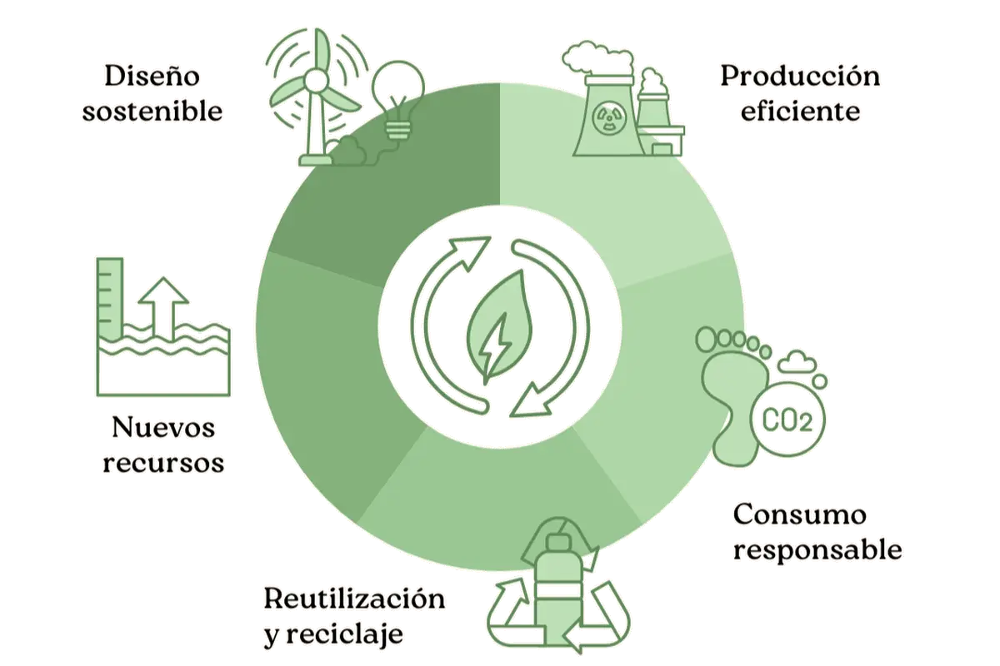

Conoce las jornadas de economía circular
Desde el Ayto.de OZ consideramos que el objetivo no debe centrarse en la gestión de los residuos, sino en cambiar el modelo para eliminar el concepto de residuos y tratarlo como nuevas materias primas, y eso implica mucho más que reciclar. En estas jornadas queremos profundizar en las oportunidades que aporta la Economía Circular en el área de Residuos y ofrecer ejemplos prácticos que se puedan implementar.
Los temas a tratar en estas jornadas serán:
- Soluciones para los Residuos desde la Economía Circular.
- Legislación sobre Residuos y Economía Circular.
- Aprovechamiento energético de residuos.
- Biorrefinerías: Aprovechamiento de subproductos.
- De residuos agrícolas a producto innovador.